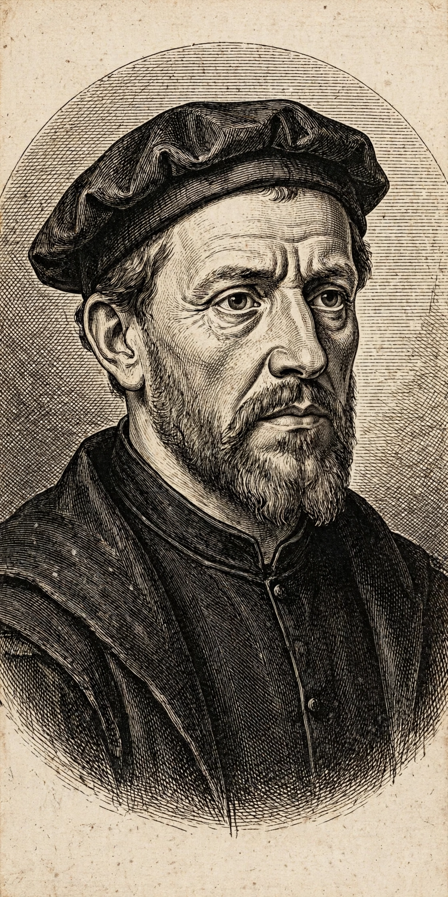

| Born | 1496, Witmarsum, Friesland |
|---|---|
| Died | 31 January 1561 (aged 64–65), Wüstenfelde, Holstein |
| Occupation | Catholic priest turned Anabaptist leader and theologian |
| Known for | Namesake of the Mennonites |
Menno Simons (1496 – 31 January 1561) was a Dutch Catholic priest from Friesland who became an influential Anabaptist religious leader during the Protestant Reformation. Simons was a contemporary of the Protestant Reformers, and his followers became known as Mennonites. He emphasised adult (believers') baptism, pacifism, and a disciplined church separated from the state.

Simons was ordained a Catholic priest in 1524 and served in his home village of Witmarsum. Doubts about transubstantiation and, after reading the New Testament, about infant baptism led him gradually toward evangelical views. The execution of the Anabaptist Sicke Snijder in 1531 and the violent Münster rebellion of 1534–35 — in which his own brother died — moved him to renounce his priesthood in 1536 and join the peaceful Anabaptists led by Obbe Philips. He was ordained an elder in 1537.
For the remaining 24 years of his life, Simons travelled through the Low Countries and northern Germany — with a price on his head under an imperial edict — organizing congregations, ordaining leaders, and writing extensively, including his Foundation of Christian Doctrine (1539). He died in 1561 at Wüstenfelde near Lübeck, on the estate of a sympathetic nobleman.
Simons taught nonresistance, refusal of oaths and military service, church discipline through the ban, and a strong distinction between the church and the world. His collected works were published in Dutch in 1681. The Mennonite churches, and by extension the broader tradition including the Amish (who split under Jakob Ammann in 1693), trace their identity in large part to his leadership.